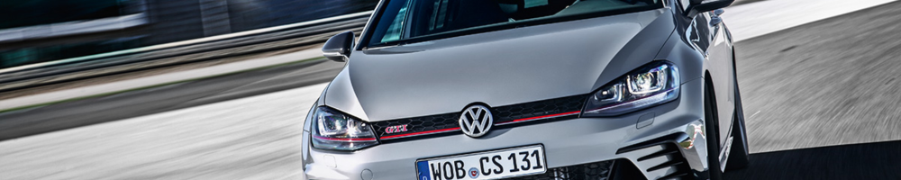

MOTORIZAÇÃO
Motorizção
350 TSi 2.0L VVT Turbo
Tipo
4 cilindros em linha
Valvulas
16 (4 por cilindro)
Alimentação
Injeção eletrônica direta
Posição
Transversal / Dianteiro
Combustivel
Etanol / Gasolina
Potência (cv)
230
Torque (Kgf.m)
35,7
Direção
Elétrica
Tração
Dianteira
Transmissão
DSG Automatizado/Sequencial de 6 velocidades
DESEMPENHO
Velocidade máx (Km/h)
238
Tempo 0-100Km/h
7,0 s
Consumo cidade (Km/L) 10,2
Consumo estrada
(Km/L)
12,1
SUSPENSÃO / FREIO / RODA
Suspensão dianteira
Independente tipo McPherson com molas helicoidais
Suspensão traseira
Semi-independente com Eixo de torção com molas helicoidais
Freio dianteiro
Disco Ventilado c/ ABS
Freio traseiro
Disco Sólido c/ ABS
Roda
Aro 17 - Aluminio
Pneu
225/45/R17
Golf GTI